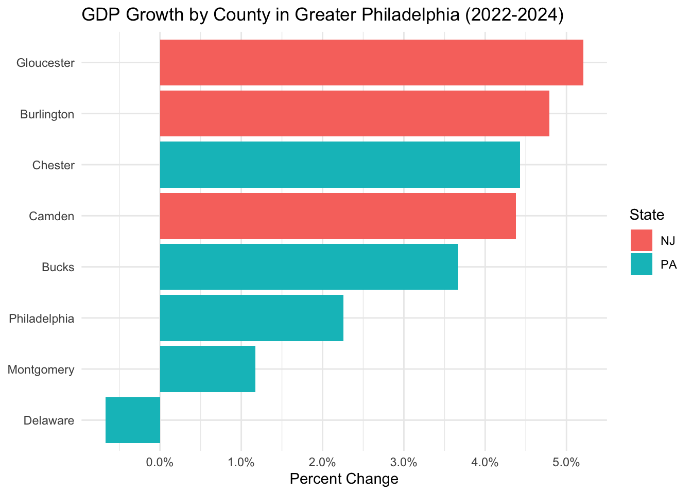
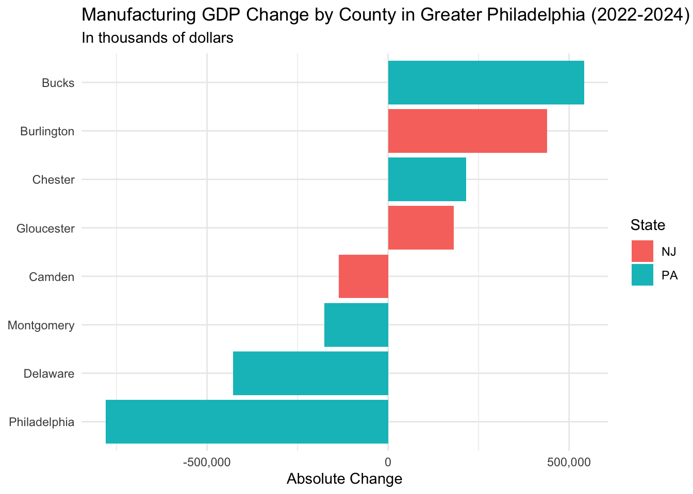

gdp_county <- gdp_county |>
mutate(pct_24_v_22 = (x2024-x2022)/x2022,
state = str_split_fixed(geo_name, ", ", 2)[, 2],
county = str_split_fixed(geo_name, ", ", 2)[, 1]) Economic portrait of greater Philadelphia
Pitch Memo
In two sentences, what is this story about?
Delaware County is the only county in the greater Philadelphia region whose GDP shrank between 2022 and 2024. Manufacturing industry in Delaware County lost more than $428 million in output, showing a 12% decline. Meanwhile, neighboring counties like Bucks and Burlington saw their manufacturing GDP grow by double digits over the same period.

In one sentence, why tell this story NOW?
The Bureau of Economic Analysis (BEA) released its 2024 county-level GDP data on February 5, 2026, offering the most current picture of how the greater Philadelphia region’s economy has shifted.
Who is your target audience?
Residents and workers in Delaware County and the greater Philadelphia region
Three people you can interview for this story
- Still finding actual person: An economist at the Federal Reserve Bank of Philadelphia specializing in regional labor markets, who could provide context on the broader manufacturing decline across southeastern Pennsylvania.
- Brian C. Eury, Chair of Delaware County Industrial Development Authority, who could speak to what industries the county has tried to attract and whether any economic diversification strategies are underway. (610) 566-2225
- A representative from the Delaware County Central Labor Council, AFL-CIO, (maybe Todd Farally the President? but I haven’t find his direct contact info), who could speak to job losses across the county’s manufacturing sector
Potential impact
A sustained decline in Delaware County’s manufacturing output likely means fewer stable jobs for working-class residents, reduced tax revenue for local services, and a widening gap between the county and its neighbors.
What are three things that surprised or interested you about this story?
- Delaware County’s GDP shrank even as personal income grew by 10%. Residents may be earning more by commuting to jobs elsewhere.
(How to explore this with data?)
this headline needs to be fixed – it bleeds off the page – and the screenshot needs cropping on the top

- Philadelphia’s manufacturing sector actually fell harder than Delaware County’s (14% vs. 12%), but Philadelphia’s overall GDP remained positive. Delaware County’s economy is far more dependent on manufacturing and has fewer industries to fill the gap.


- Between 2015 and 2025, transportation equipment manufacturing, historically the largest employer among all manufacturing sub-sectors, lost nearly 1,600 jobs, a 29% decline.
this chart doesn’t illustrate the decline you describe in point #3. so either revise the chart or the narrative in #3.
Context: Summarize any previous coverage.
WHYY reported in 2023 that the greater Philadelphia region experienced nine consecutive months of manufacturing slowdown, with factory closures and layoffs in Philadelphia and King of Prussia.
The Federal Reserve Bank of Philadelphia’s May 2026 Manufacturing Business Outlook Survey found that the employment index remained negative for the third time in four months, suggesting the region’s manufacturing job losses are ongoing.
According to Delaware County’s official history, the county has a long history as an industrial hub, home to shipbuilders, locomotive makers, and oil refineries. But the county’s manufacturing sector has been shrinking for decades, and the latest BEA data shows it is still losing ground. No reporting has specifically asked why Delaware County has failed to compensate for those losses with growth in other sectors, or what that means for the workers and communities left behind.
Photos, video, graphics - How will you make this story visual?
Graphics
What other information do you need to gather?
- Employment data for Delaware County to understand where workers went as manufacturing shrank, and why personal income continued to rise despite the GDP decline.
- Population change data would help confirm whether residents are leaving the county.
- Any specific factory closures during this period?
Estimated delivery
Data analysis will be complete by June 7. Interviews will wrap up by June 15. A first draft will be ready by June 17.
The following section contains code for reference (work in progress!!!).
Code Memo
Data limitations
This data series lags significantly. We are working with 2024 data, the most recent available. But it is still the best you can get and you can’t beat the price.
Setup
Regional GDP by County
Data limitations
This data series lags significantly. We are working with 2024 data, the most recent available. But it is still the best you can get and you can’t beat the price.
Retrieve GDP Data
GDP CAGDP1 County gross domestic product (GDP) summary Real Gross Domestic Product (GDP) (Thousands of chained 2017 dollars) Source Page https://www.bea.gov/news/2026/gross-domestic-product-county-and-personal-income-county-2024
And more detail: https://www.bea.gov/data/gdp/gdp-by-county
Calculate change 2024 vs 2022; split out state
philly_gdp <- gdp_county |>
filter(state == "PA" | state == "NJ") |>
filter(county %in% c("Philadelphia", "Montgomery",
"Bucks", "Chester",
"Delaware", "Gloucester",
"Camden", "Burlington")) |>
select(county, state, x2022, x2024, pct_24_v_22) |>
mutate(rank(x2022)) |>
mutate(rank(x2024)) |>
arrange(desc(pct_24_v_22))
philly_gdp# A tibble: 8 × 7
county state x2022 x2024 pct_24_v_22 `rank(x2022)` `rank(x2024)`
<chr> <chr> <dbl> <dbl> <dbl> <dbl> <dbl>
1 Gloucester NJ 13994075 14722428 0.0520 1 1
2 Burlington NJ 30915417 32395824 0.0479 3 3
3 Chester PA 47391773 49491894 0.0443 6 6
4 Camden NJ 26094892 27237865 0.0438 2 2
5 Bucks PA 36888334 38241897 0.0367 5 5
6 Philadelphia PA 106999472 109412657 0.0226 8 8
7 Montgomery PA 88989489 90035254 0.0118 7 7
8 Delaware PA 34288808 34058368 -0.00672 4 4Chart: GDP Growth by County
rsw comment: you’ll want this chart at the top of your page
# AI assisted
ggplot(philly_gdp, aes(x = reorder(county, pct_24_v_22), y = pct_24_v_22, fill = state)) +
geom_col() +
coord_flip() +
scale_y_continuous(labels = scales::percent) +
labs(
title = "GDP Growth by County in Greater Philadelphia (2022-2024)",
x = NULL,
y = "Percent Change",
fill = "State"
) +
theme_minimal()
Finding: Delaware County was the only county in the region to see its GDP shrink between 2022 and 2024.
Part 2: Personal Income by County
Load and Clean Data
# [Personal income (Thousands of dollars)](https://www.bea.gov/news/2026/gross-domestic-product-county-and-personal-income-county-2024)
# BEA CAINC1 - County Personal Income Summary
# CAINC1 County personal income summary: personal income, population, per capita personal income
cainc1 <- read_csv("../data/bea_gdp_2024_personal_income_county_CAINC1.csv", skip=3) |>
clean_names() |>
mutate(across(x2022:x2024, as.numeric)) |>
mutate(
pct_23_v_22 = round((x2023 - x2022) / x2022, 4),
pct_24_v_23 = round((x2024 - x2023) / x2023, 4),
pct_24_v_22 = round((x2024 - x2022) / x2022, 4)
)Warning: One or more parsing issues, call `problems()` on your data frame for details,
e.g.:
dat <- vroom(...)
problems(dat)Rows: 3167 Columns: 5
── Column specification ────────────────────────────────────────────────────────
Delimiter: ","
chr (5): GeoFIPS, GeoName, 2022, 2023, 2024
ℹ Use `spec()` to retrieve the full column specification for this data.
ℹ Specify the column types or set `show_col_types = FALSE` to quiet this message.Warning: There were 3 warnings in `mutate()`.
The first warning was:
ℹ In argument: `across(x2022:x2024, as.numeric)`.
Caused by warning:
! NAs introduced by coercion
ℹ Run `dplyr::last_dplyr_warnings()` to see the 2 remaining warnings.Filter Greater Philadelphia
philly_income <- cainc1 |>
filter(str_detect(geo_name, "Philadelphia, PA|Montgomery, PA|Bucks, PA|Chester, PA|Delaware, PA|Gloucester, NJ|Camden, NJ|Burlington, NJ")) |>
select(geo_name, x2022, x2024, pct_24_v_22) |>
separate(geo_name, into = c("county", "state"), sep = ", ") |>
arrange(desc(pct_24_v_22))
philly_income# A tibble: 8 × 5
county state x2022 x2024 pct_24_v_22
<chr> <chr> <dbl> <dbl> <dbl>
1 Burlington NJ 33094170 37195463 0.124
2 Chester PA 55399329 62177057 0.122
3 Montgomery PA 81829035 91769650 0.122
4 Bucks PA 56456435 62844148 0.113
5 Camden NJ 32535048 36195828 0.112
6 Gloucester NJ 19213771 21323961 0.110
7 Delaware PA 45267843 49769749 0.0995
8 Philadelphia PA 91887036 96312500 0.0482Chart: Personal Income Growth by County
# AI assisted
ggplot(philly_income, aes(x = reorder(county, pct_24_v_22), y = pct_24_v_22, fill = state)) +
geom_col() +
coord_flip() +
scale_y_continuous(labels = scales::percent) +
labs(
title = "Personal Income Growth by County in Greater Philadelphia (2022-2024)",
x = NULL,
y = "Percent Change",
fill = "State"
) +
theme_minimal()
Finding: Personal income in Delaware County grew 10.98% between 2022 and 2024, yet its GDP was the only one in the region to shrink. Residents may be earning more by working elsewhere while local industries are losing ground.
Part 3: GDP by Industry
Load and Clean Data
BEA CAGDP2 — GDP by Industry (Current dollars)
Filter Private Industry Sub-sectors for Greater Philadelphia
greater_philly_industry <- gdp_industry |>
filter(str_detect(geo_name, "Philadelphia, PA|Montgomery, PA|Bucks, PA|Chester, PA|Delaware, PA|Gloucester, NJ|Camden, NJ|Burlington, NJ")) |>
filter(description %in% c(
"Agriculture, forestry, fishing and hunting",
"Mining, quarrying, and oil and gas extraction",
"Utilities",
"Construction",
"Manufacturing",
"Wholesale trade",
"Retail trade",
"Transportation and warehousing",
"Information",
"Finance, insurance, real estate, rental, and leasing",
"Professional and business services",
"Educational services, health care, and social assistance",
"Arts, entertainment, recreation, accommodation, and food services",
"Other services (except government and government enterprises)"
)) |>
select(geo_name, description, x2022, x2024) |>
mutate(pct_24_v_22 = round((x2024 - x2022) / x2022, 4)) |>
mutate(x24_v_22 = x2024 - x2022) |>
arrange(desc(x24_v_22))
glimpse(greater_philly_industry)Rows: 112
Columns: 6
$ geo_name <chr> "Philadelphia, PA", "Chester, PA", "Philadelphia, PA", "Ph…
$ description <chr> "Educational services, health care, and social assistance"…
$ x2022 <dbl> 23786295, 14402941, 25276382, 21743795, 21130722, 5569479,…
$ x2024 <dbl> 28019109, 17349374, 28188153, 24421374, 23475546, 7328615,…
$ pct_24_v_22 <dbl> 0.1780, 0.2046, 0.1152, 0.1231, 0.1110, 0.3159, 0.1690, 0.…
$ x24_v_22 <dbl> 4232814, 2946433, 2911771, 2677579, 2344824, 1759136, 1584…Top 10 Industries with Largest Decline Across the Region
greater_philly_industry |>
slice_min(x24_v_22, n = 10)# A tibble: 10 × 6
geo_name description x2022 x2024 pct_24_v_22 x24_v_22
<chr> <chr> <dbl> <dbl> <dbl> <dbl>
1 Philadelphia, PA Information 8.50e6 6.48e6 -0.238 -2021288
2 Philadelphia, PA Manufacturing 5.56e6 4.78e6 -0.140 -780623
3 Delaware, PA Manufacturing 3.49e6 3.06e6 -0.123 -428787
4 Chester, PA Information 6.22e6 5.91e6 -0.0493 -306887
5 Montgomery, PA Manufacturing 1.52e7 1.51e7 -0.0115 -175826
6 Camden, NJ Manufacturing 2.29e6 2.15e6 -0.0598 -136799
7 Chester, PA Agriculture, forestry, f… 4.01e5 2.93e5 -0.269 -107686
8 Gloucester, NJ Utilities 4.04e5 3.09e5 -0.236 -95262
9 Burlington, NJ Agriculture, forestry, f… 1.40e5 7.19e4 -0.487 -68145
10 Bucks, PA Agriculture, forestry, f… 7.55e4 2.22e4 -0.706 -53294Finding: Delaware County’s manufacturing sector ranks third on the list, which likely explains why it is the only county in the region with negative GDP growth. I decide to have a closer look at Delaware County’s industry breakdown.
Which Industries Are Shrinking in Delaware County
Focus on Delaware County to identify the main driver of GDP decline
delaware_gdp_industry <- greater_philly_industry |>
filter(geo_name == "Delaware, PA") |>
filter(x2022 > 0) |>
mutate(abs_change = x2024 - x2022) |>
arrange(abs_change)
delaware_gdp_industry# A tibble: 14 × 7
geo_name description x2022 x2024 pct_24_v_22 x24_v_22 abs_change
<chr> <chr> <dbl> <dbl> <dbl> <dbl> <dbl>
1 Delaware, PA Manufacturing 3.49e6 3.06e6 -0.123 -428787 -428787
2 Delaware, PA Transportation an… 2.45e6 2.40e6 -0.0184 -45002 -45002
3 Delaware, PA Information 1.89e6 1.86e6 -0.0155 -29394 -29394
4 Delaware, PA Mining, quarrying… 2.06e4 4.96e3 -0.759 -15660 -15660
5 Delaware, PA Agriculture, fore… 4.35e3 1.20e4 1.77 7690 7690
6 Delaware, PA Wholesale trade 1.50e6 1.54e6 0.0306 45824 45824
7 Delaware, PA Utilities 5.61e5 6.42e5 0.144 80743 80743
8 Delaware, PA Construction 1.82e6 1.91e6 0.0529 96130 96130
9 Delaware, PA Other services (e… 9.55e5 1.09e6 0.140 133672 133672
10 Delaware, PA Retail trade 2.57e6 2.88e6 0.123 314699 314699
11 Delaware, PA Arts, entertainme… 1.19e6 1.51e6 0.264 315840 315840
12 Delaware, PA Finance, insuranc… 9.88e6 1.04e7 0.054 533901 533901
13 Delaware, PA Educational servi… 5.08e6 5.76e6 0.134 678699 678699
14 Delaware, PA Professional and … 5.85e6 6.57e6 0.124 727266 727266Finding: Manufacturing is the primary driver of Delaware County’s GDP decline, with output falling 12.3% and losing over $428 million between 2022 and 2024.
Manufacturing Across Greater Philadelphia
philly_manufacturing <- greater_philly_industry |>
filter(description == "Manufacturing") |>
filter(x2022 > 0) |> #AI-assisted
mutate(abs_change = x2024 - x2022) |>
separate(geo_name, into = c("county", "state"), sep = ", ") |>
arrange(abs_change)
philly_manufacturing# A tibble: 8 × 8
county state description x2022 x2024 pct_24_v_22 x24_v_22 abs_change
<chr> <chr> <chr> <dbl> <dbl> <dbl> <dbl> <dbl>
1 Philadelphia PA Manufacturing 5.56e6 4.78e6 -0.140 -780623 -780623
2 Delaware PA Manufacturing 3.49e6 3.06e6 -0.123 -428787 -428787
3 Montgomery PA Manufacturing 1.52e7 1.51e7 -0.0115 -175826 -175826
4 Camden NJ Manufacturing 2.29e6 2.15e6 -0.0598 -136799 -136799
5 Gloucester NJ Manufacturing 1.72e6 1.90e6 0.105 180729 180729
6 Chester PA Manufacturing 3.77e6 3.99e6 0.0571 215287 215287
7 Burlington NJ Manufacturing 2.58e6 3.02e6 0.170 439705 439705
8 Bucks PA Manufacturing 4.87e6 5.41e6 0.111 541079 541079Charts: Manufacturing GDP Change by County
#AI-assister
ggplot(philly_manufacturing, aes(x = reorder(county, pct_24_v_22), y = pct_24_v_22, fill = state)) +
geom_col() +
coord_flip() +
scale_y_continuous(labels = scales::percent) +
labs(
title = "Manufacturing GDP Percentage Change by County in Greater Philadelphia (2022-2024)",
x = NULL,
y = "Percent Change",
fill = "State"
) +
theme_minimal()
ggplot(philly_manufacturing, aes(x = reorder(county, abs_change), y =abs_change , fill = state)) +
geom_col() +
coord_flip() +
scale_y_continuous(labels = scales::comma) +
labs(
title = "Manufacturing GDP Change by County in Greater Philadelphia (2022-2024)",
subtitle = "In thousands of dollars",
x = NULL,
y = "Absolute Change",
fill = "State"
) +
theme_minimal()
Findings: Philadelphia had the largest manufacturing decline both in percentage terms and absolute value, but its overall GDP remained positive. Delaware County, by contrast, lost 12% of its manufacturing output and saw its overall GDP turn negative. Maybe its economy is more vulnerable and lacks other industries to fill the gap left by manufacturing’s decline.
delaware_all <- gdp_industry |>
filter(str_detect(geo_name, "Delaware, PA")) |>
select(geo_name, description, x2022, x2024) |>
mutate(pct_24_v_22 = round((x2024 - x2022) / x2022, 4)) |>
mutate(x24_v_22 = x2024 - x2022) |>
arrange(desc(x24_v_22))
delaware_all# A tibble: 35 × 6
geo_name description x2022 x2024 pct_24_v_22 x24_v_22
<chr> <chr> <dbl> <dbl> <dbl> <dbl>
1 Delaware, PA Private services-providing i… 3.19e7 3.47e7 0.0863 2756246
2 Delaware, PA All industry total 3.99e7 4.26e7 0.068 2712311
3 Delaware, PA Private industries 3.73e7 3.97e7 0.0648 2415618
4 Delaware, PA Real estate and rental and l… 6.32e6 7.06e6 0.116 734971
5 Delaware, PA Professional and business se… 5.85e6 6.57e6 0.124 727266
6 Delaware, PA Educational services, health… 5.08e6 5.76e6 0.134 678699
7 Delaware, PA Finance, insurance, real est… 9.88e6 1.04e7 0.054 533901
8 Delaware, PA Health care and social assis… 3.71e6 4.21e6 0.136 505281
9 Delaware, PA Management of companies and … 2.06e6 2.49e6 0.208 428733
10 Delaware, PA Trade 4.06e6 4.42e6 0.0888 360522
# ℹ 25 more rowsLook at Philly metro area
oes_25 <- read_excel("../data_OESM/MSA_M2025_dl.xlsx") |>
clean_names()
glimpse(oes_25)Rows: 150,023
Columns: 32
$ area <chr> "10180", "10180", "10180", "10180", "10180", "10180", "10…
$ area_title <chr> "Abilene, TX", "Abilene, TX", "Abilene, TX", "Abilene, TX…
$ area_type <chr> "4", "4", "4", "4", "4", "4", "4", "4", "4", "4", "4", "4…
$ prim_state <chr> "TX", "TX", "TX", "TX", "TX", "TX", "TX", "TX", "TX", "TX…
$ naics <chr> "000000", "000000", "000000", "000000", "000000", "000000…
$ naics_title <chr> "Cross-industry", "Cross-industry", "Cross-industry", "Cr…
$ i_group <chr> "cross-industry", "cross-industry", "cross-industry", "cr…
$ own_code <chr> "1235", "1235", "1235", "1235", "1235", "1235", "1235", "…
$ occ_code <chr> "00-0000", "11-0000", "11-1011", "11-1021", "11-2021", "1…
$ occ_title <chr> "All Occupations", "Management Occupations", "Chief Execu…
$ o_group <chr> "total", "major", "detailed", "detailed", "detailed", "de…
$ tot_emp <chr> "75070", "5470", "40", "2120", "140", "280", "40", "120",…
$ emp_prse <chr> "0", "2.1", "10", "1.6", "6.5", "7.1", "14.1", "4.4000000…
$ jobs_1000 <chr> "1000", "72.873999999999995", "0.54200000000000004", "28.…
$ loc_quotient <chr> "1", "1.02", "0.41", "1.25", "0.73", "0.9", "1.1000000000…
$ pct_total <lgl> NA, NA, NA, NA, NA, NA, NA, NA, NA, NA, NA, NA, NA, NA, N…
$ pct_rpt <lgl> NA, NA, NA, NA, NA, NA, NA, NA, NA, NA, NA, NA, NA, NA, N…
$ h_mean <chr> "26.13", "53.94", "99.14", "54.63", "61.98", "61.86", "49…
$ a_mean <chr> "54360", "112190", "206200", "113630", "128910", "128680"…
$ mean_prse <chr> "0.6", "0.9", "6.3", "1.3", "3.8", "3.1", "3.4", "4.8", "…
$ h_pct10 <chr> "11.97", "22.98", "42.5", "21.04", "34.14", "30.3", "29.0…
$ h_pct25 <chr> "14.9", "31.25", "58.65", "27.76", "41.23", "36.770000000…
$ h_median <chr> "21.32", "45.9", "79.7", "41.44", "52.45", "53.38", "45.0…
$ h_pct75 <chr> "29.92", "64.34", "113.51", "67.13", "74.400000000000006"…
$ h_pct90 <chr> "45.19", "92.98", "187.68", "101.14", "95.07", "104.99", …
$ a_pct10 <chr> "24900", "47790", "88400", "43770", "71010", "63020", "60…
$ a_pct25 <chr> "30980", "64990", "121980", "57740", "85770", "76470", "6…
$ a_median <chr> "44340", "95480", "165770", "86200", "109100", "111020", …
$ a_pct75 <chr> "62230", "133840", "236100", "139630", "154750", "161920"…
$ a_pct90 <chr> "93990", "193390", "390370", "210360", "197740", "218380"…
$ annual <chr> NA, NA, NA, NA, NA, NA, NA, NA, NA, NA, NA, NA, NA, NA, N…
$ hourly <chr> NA, NA, NA, NA, NA, NA, NA, NA, NA, NA, NA, NA, NA, NA, N…#data source: https://data.bls.gov/oes/#/homephilly_oes_25 <- oes_25 |>
filter(area == "37980") |>
select(area, area_title, occ_code, occ_title, o_group,
tot_emp, h_mean, a_mean, h_median, a_median) |>
mutate(across(6:10, as.numeric)) |>
mutate(
emp_share = round((tot_emp / tot_emp[occ_code == "00-0000"]) * 100, 2)
)Warning: There were 5 warnings in `mutate()`.
The first warning was:
ℹ In argument: `across(6:10, as.numeric)`.
Caused by warning:
! NAs introduced by coercion
ℹ Run `dplyr::last_dplyr_warnings()` to see the 4 remaining warnings.philly_oes_25# A tibble: 757 × 11
area area_title occ_code occ_title o_group tot_emp h_mean a_mean h_median
<chr> <chr> <chr> <chr> <chr> <dbl> <dbl> <dbl> <dbl>
1 37980 Philadelphia… 00-0000 All Occu… total 2897830 34.5 71730 26.1
2 37980 Philadelphia… 11-0000 Manageme… major 222640 72.9 151700 63.4
3 37980 Philadelphia… 11-1011 Chief Ex… detail… 4120 163. 338450 141.
4 37980 Philadelphia… 11-1021 General … detail… 68730 70.0 145650 58.5
5 37980 Philadelphia… 11-2011 Advertis… detail… 660 76.0 157990 70.4
6 37980 Philadelphia… 11-2021 Marketin… detail… 8270 83.1 172890 80.0
7 37980 Philadelphia… 11-2022 Sales Ma… detail… 10200 82.5 171530 75.2
8 37980 Philadelphia… 11-2032 Public R… detail… 1310 70.9 147520 62.2
9 37980 Philadelphia… 11-2033 Fundrais… detail… 950 64.8 134900 59.5
10 37980 Philadelphia… 11-3012 Administ… detail… 3490 65.2 135580 60.0
# ℹ 747 more rows
# ℹ 2 more variables: a_median <dbl>, emp_share <dbl>philly_oes_25 |>
filter(o_group == "detailed") |>
summarise(total = sum(emp_share, na.rm = TRUE))# A tibble: 1 × 1
total
<dbl>
1 99.3philly_oes_25 |>
filter(o_group == "major") |>
arrange(desc(emp_share)) |>
select(occ_title, tot_emp, emp_share)# A tibble: 22 × 3
occ_title tot_emp emp_share
<chr> <dbl> <dbl>
1 Office and Administrative Support Occupations 320580 11.1
2 Transportation and Material Moving Occupations 247580 8.54
3 Food Preparation and Serving Related Occupations 235150 8.11
4 Healthcare Support Occupations 225820 7.79
5 Management Occupations 222640 7.68
6 Sales and Related Occupations 221040 7.63
7 Healthcare Practitioners and Technical Occupations 213800 7.38
8 Business and Financial Operations Occupations 200850 6.93
9 Educational Instruction and Library Occupations 199180 6.87
10 Production Occupations 111120 3.83
# ℹ 12 more rowsphilly_oes_25 |>
filter(o_group == "detailed") |>
arrange(desc(emp_share)) |>
select(occ_title, tot_emp, emp_share)# A tibble: 734 × 3
occ_title tot_emp emp_share
<chr> <dbl> <dbl>
1 Home Health and Personal Care Aides 158280 5.46
2 Registered Nurses 73790 2.55
3 Fast Food and Counter Workers 69080 2.38
4 General and Operations Managers 68730 2.37
5 Retail Salespersons 63990 2.21
6 Cashiers 54100 1.87
7 Laborers and Freight, Stock, and Material Movers, Hand 51100 1.76
8 Office Clerks, General 45660 1.58
9 Stockers and Order Fillers 45770 1.58
10 Waiters and Waitresses 41900 1.45
# ℹ 724 more rows# 处理单个文件的函数
process_oes <- function(year) {
path <- paste0("../data_OESM/MSA_M", year, "_dl.xlsx")
read_excel(path) |>
clean_names() |>
filter(area == "37980", o_group %in% c("major","total")) |>
mutate(tot_emp = as.numeric(tot_emp)) |>
select(occ_code, occ_title, tot_emp) |>
mutate(
emp_share = round((tot_emp / sum(tot_emp[occ_code == "00-0000"])) * 100, 2)
) |>
filter(occ_code != "00-0000") |>
rename(
"{year}_tot_emp" := tot_emp,
"{year}_emp_share" := emp_share
) |>
select(-occ_code)
}
# 批量跑2021-2025
years <- 2021:2025
oes_list <- map(years, process_oes)
# 以2025前十为基准，依次left_join
top10_titles <- oes_list[[5]] |> # [[5]]是2025
slice_max(`2025_tot_emp`, n = 5) |>
pull(occ_title)
oes_combined <- oes_list |>
reduce(left_join, by = "occ_title") |>
filter(occ_title %in% top10_titles) |>
arrange(desc(`2025_tot_emp`))oes_wide <- oes_combined |>
select(occ_title, `2021_emp_share`, `2022_emp_share`, `2023_emp_share`,
`2024_emp_share`, `2025_emp_share`) |>
pivot_longer(
cols = -occ_title,
names_to = "year",
values_to = "emp_share",
names_pattern = "(\\d{4})_emp_share"
) |>
pivot_wider(
names_from = occ_title,
values_from = emp_share
) oes_wide |>
mutate(across(
-year,
\(x) round((x - x[year == "2021"]) / x[year == "2021"] * 100, 2)
)) |> write_csv("../data_OESM/philly_emp_growth_datawrapper.csv")# Quarterly Census of Employment and Wages - QCEW
# Source: https://data.bls.gov/cew/apps/table_maker/v4/table_maker.htm#type=7&year=2025&qtr=A&own=5&area=42045&supp=0
# NAICS Code instruction: https://www.bls.gov/iag/tgs/iag_index_naics.htm
# data dictionary: https://www.bls.gov/cew/additional-resources/open-data/csv-data-slices.htm
# file download: http://www.bls.gov/cew/data/api/2025/a/area/42045.csv
qcew_25 <- read.csv("../data_QCEW/qcew_25.csv")
glimpse(qcew_25)Rows: 1,730
Columns: 38
$ area_fips <int> 42045, 42045, 42045, 42045, 42045, 42…
$ own_code <int> 0, 1, 1, 1, 1, 1, 1, 1, 1, 1, 1, 1, 1…
$ industry_code <chr> "10", "10", "102", "1021", "1024", "1…
$ agglvl_code <int> 70, 71, 72, 73, 73, 73, 74, 75, 76, 7…
$ size_code <int> 0, 0, 0, 0, 0, 0, 0, 0, 0, 0, 0, 0, 0…
$ year <int> 2025, 2025, 2025, 2025, 2025, 2025, 2…
$ qtr <chr> "A", "A", "A", "A", "A", "A", "A", "A…
$ disclosure_code <chr> "", "", "", "", "", "", "", "", "", "…
$ annual_avg_estabs <int> 14594, 64, 64, 41, 1, 23, 41, 1, 1, 1…
$ annual_avg_emplvl <int> 219161, 1970, 1970, 1020, 1, 950, 102…
$ total_annual_wages <dbl> 16404627760, 225873774, 225873774, 11…
$ taxable_annual_wages <int> 2114902476, 0, 0, 0, 0, 0, 0, 0, 0, 0…
$ annual_contributions <int> 72022640, 0, 0, 0, 0, 0, 0, 0, 0, 0, …
$ annual_avg_wkly_wage <int> 1439, 2205, 2205, 2081, 1514, 2338, 2…
$ avg_annual_pay <int> 74852, 114642, 114642, 108227, 78750,…
$ lq_disclosure_code <chr> "", "", "", "", "", "", "", "", "", "…
$ lq_annual_avg_estabs <dbl> 1.00, 0.88, 0.88, 1.13, 0.54, 0.79, 1…
$ lq_annual_avg_emplvl <dbl> 1.00, 0.48, 0.49, 1.10, 0.01, 0.42, 1…
$ lq_total_annual_wages <dbl> 1.00, 0.55, 0.56, 1.68, 0.01, 0.45, 1…
$ lq_taxable_annual_wages <dbl> 1, 0, 0, 0, 0, 0, 0, 0, 0, 0, 0, 0, 0…
$ lq_annual_contributions <dbl> 1, 0, 0, 0, 0, 0, 0, 0, 0, 0, 0, 0, 0…
$ lq_annual_avg_wkly_wage <dbl> 1.00, 1.15, 1.15, 1.53, 0.81, 1.09, 1…
$ lq_avg_annual_pay <dbl> 1.00, 1.14, 1.14, 1.53, 0.81, 1.09, 1…
$ oty_disclosure_code <chr> "", "", "", "", "", "", "", "", "", "…
$ oty_annual_avg_estabs_chg <int> 170, 0, 0, 0, 0, 1, 0, 0, 0, 0, 0, 0,…
$ oty_annual_avg_estabs_pct_chg <dbl> 1.2, 0.0, 0.0, 0.0, 0.0, 4.5, 0.0, 0.…
$ oty_annual_avg_emplvl_chg <int> 625, 53, 53, 9, -1, 46, 9, 17, 17, 17…
$ oty_annual_avg_emplvl_pct_chg <dbl> 0.3, 2.8, 2.8, 0.9, -50.0, 5.1, 0.9, …
$ oty_total_annual_wages_chg <int> 413920994, 18082095, 18082095, 118302…
$ oty_total_annual_wages_pct_chg <dbl> 2.6, 8.7, 8.7, 12.0, -63.5, 5.8, 12.0…
$ oty_taxable_annual_wages_chg <int> 35138003, 0, 0, 0, 0, 0, 0, 0, 0, 0, …
$ oty_taxable_annual_wages_pct_chg <dbl> 1.7, 0.0, 0.0, 0.0, 0.0, 0.0, 0.0, 0.…
$ oty_annual_contributions_chg <int> 3727230, 0, 0, 0, 0, 0, 0, 0, 0, 0, 0…
$ oty_annual_contributions_pct_chg <dbl> 5.5, 0.0, 0.0, 0.0, 0.0, 0.0, 0.0, 0.…
$ oty_annual_avg_wkly_wage_chg <int> 32, 121, 121, 207, -67, 17, 207, 731,…
$ oty_annual_avg_wkly_wage_pct_chg <dbl> 2.3, 5.8, 5.8, 11.0, -4.2, 0.7, 11.0,…
$ oty_avg_annual_pay_chg <int> 1680, 6253, 6253, 10774, -3437, 887, …
$ oty_avg_annual_pay_pct_chg <dbl> 2.3, 5.8, 5.8, 11.1, -4.2, 0.7, 11.1,…qcew_25_mfg <- qcew_25 |>
filter(
area_fips == 42045,
str_starts(industry_code, "31") |
str_starts(industry_code, "32") |
str_starts(industry_code, "33")
) |>
filter(agglvl_code == 75) |>
select(industry_code, year, annual_avg_emplvl) |>
arrange(desc(annual_avg_emplvl))naics_labels <- tibble(
industry_code = c("311", "312", "313", "314", "315", "316",
"321", "322", "323", "324", "325", "326", "327",
"331", "332", "333", "334", "335", "336", "337", "339"),
industry_title = c(
"Food Manufacturing",
"Beverage and Tobacco Product Manufacturing",
"Textile Mills",
"Textile Product Mills",
"Apparel Manufacturing",
"Leather and Allied Product Manufacturing",
"Wood Product Manufacturing",
"Paper Manufacturing",
"Printing and Related Support Activities",
"Petroleum and Coal Products Manufacturing",
"Chemical Manufacturing",
"Plastics and Rubber Products Manufacturing",
"Nonmetallic Mineral Product Manufacturing",
"Primary Metal Manufacturing",
"Fabricated Metal Product Manufacturing",
"Machinery Manufacturing",
"Computer and Electronic Product Manufacturing",
"Electrical Equipment, Appliance, and Component Manufacturing",
"Transportation Equipment Manufacturing",
"Furniture and Related Product Manufacturing",
"Miscellaneous Manufacturing"
)
)
qcew_25_mfg <- qcew_25 |>
filter(
area_fips == 42045,
str_starts(industry_code, "31") |
str_starts(industry_code, "32") |
str_starts(industry_code, "33")
) |>
filter(agglvl_code == 75) |>
select(industry_code, year, annual_avg_emplvl) |>
left_join(naics_labels, by = "industry_code") |>
arrange(desc(annual_avg_emplvl))years <- 15:25
qcew_all_mfg <- map_dfr(years, function(yr) {
path <- paste0("../data_QCEW/qcew_", sprintf("%02d", yr), ".csv")
read.csv(path) |>
filter(
area_fips == 42045,
str_starts(industry_code, "31") |
str_starts(industry_code, "32") |
str_starts(industry_code, "33"),
agglvl_code == 75
) |>
select(industry_code, year, annual_avg_emplvl) |>
left_join(naics_labels, by = "industry_code")
}) |>
arrange(year, desc(annual_avg_emplvl))
qcew_wide <- qcew_all_mfg |>
select(industry_title, year, annual_avg_emplvl) |>
pivot_wider(
names_from = year,
values_from = annual_avg_emplvl
) |>
mutate(across(2:12, as.numeric))
qcew_wide_top10 <- qcew_wide |>
arrange(desc(`2025`)) |>
slice_head(n = 10)
write.csv(qcew_wide_top10, "../data_QCEW/qcew_wide_top10.csv", row.names = FALSE)
qcew_growth <- qcew_wide_top10 |>
mutate(across(
`2015`:`2025`,
\(x) round((x - `2015`) / `2015` * 100, 2)
)) |>
arrange(desc(`2025`))
qcew_growth_long <- qcew_growth |>
pivot_longer(
cols = `2015`:`2025`,
names_to = "year",
values_to = "growth_pct"
) |>
pivot_wider(
names_from = industry_title,
values_from = growth_pct
) |>
write.csv("../data_QCEW/qcew_grow_15-25.csv", row.names = FALSE)